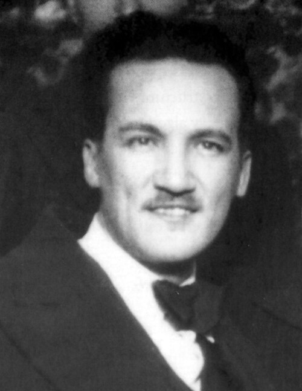

Manuel Seoane Corrales (Chorrillos, 1 de noviembre de 1900-Washington D. C., 10 de septiembre de 1963) fue un abogado, periodista y político peruano, uno de los miembros fundadores del Partido Aprista Peruano. Después de Haya de la Torre, fue el líder aprista que gozó de más popularidad. Apodado “El Cachorro”. Fundador y primer director de La Tribuna, órgano de prensa de su partido. En el seno de su partido desempeñó, entre otros cargos, la Secretaría General (1940-1948). Padeció de persecuciones y destierros al igual que el resto de sus compañeros apristas. Fue candidato a la primera vicepresidencia de la República del Perú en plancha presidencial encabezada por Haya de la Torre en las elecciones generales de 1962, las mismas que fueron anuladas.